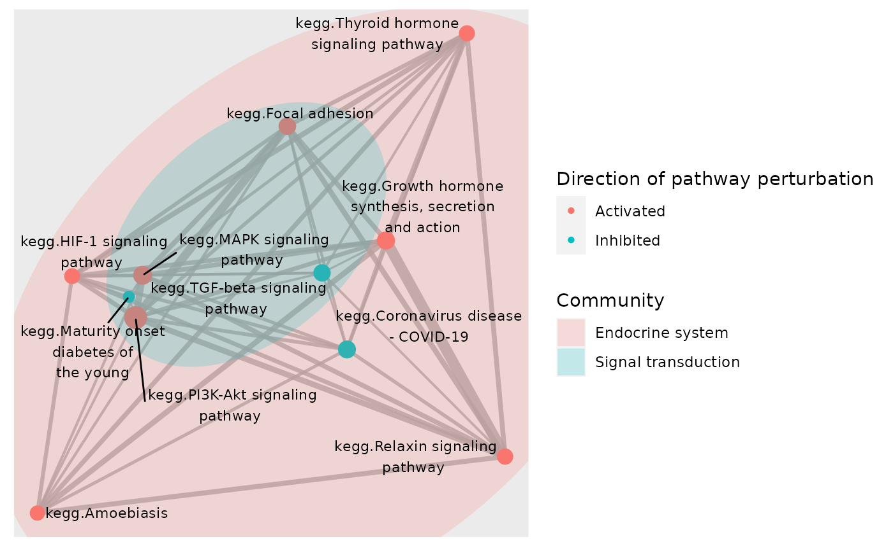
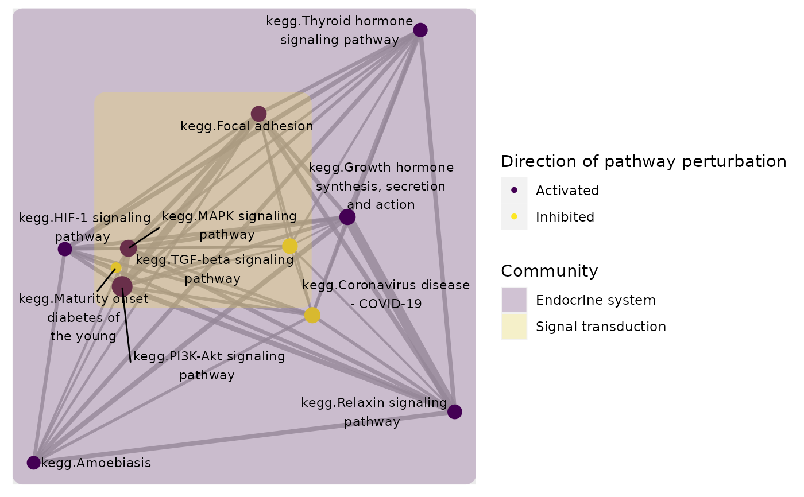

R/plot_community.R
plot_community.RdVisualise the community structure in significantly perturbed gene-set network
plot_community(
normalisedScores,
gsTopology,
gsAnnotation = NULL,
colorBy = "community",
communityMethod = c("louvain", "walktrap", "spinglass", "leading_eigen",
"edge_betweenness", "fast_greedy", "label_prop", "leiden"),
foldGSname = TRUE,
foldafter = 2,
labelFun = .rm_prefix,
layout = c("fr", "dh", "gem", "graphopt", "kk", "lgl", "mds", "sugiyama"),
markCommunity = "ellipse",
markAlpha = 0.2,
color_lg_title = NULL,
edgeAlpha = 0.8,
scale_edgeWidth = c(0.5, 3),
edgeLegend = FALSE,
scale_nodeSize = c(3, 6),
nodeShape = 16,
lb_size = 3,
lb_color = "black",
plotIsolated = FALSE,
...
)A data.frame derived from normalise_by_permu
List of pathway topology matrices generated using retrieve_topology
A data.frame containing gene-sets categories for
pathway annotation. Must contain the two columns:
c("gs_name", "category"), where gs_name denotes gene-sets names that are
matched to names of pathway topology matrices, and category records a
higher level category for each pathway. If customized annotation is not
provided, it will be assumed that the pathways were obtained from the KEGG
database and inbuilt KEGG pathway annotation information will be used
Can be any column with in the normalisedScores object, or
the additional value "community".
A community detection method supported by igraph.
See details for all methods available.
logical. Should long gene-set names be folded into two
lines
The number of words after which gene-set names should be folded. Defaults to 2
function to manipulate or modify gene-set labels. By default, any database will be stripped from the prefix using a regex pattern
The layout algorithm to apply. Accepted layouts are
"fr", "dh", "gem", "graphopt", "kk", "lgl", "mds" and "sugiyama"
character A geom_mark_* method supported by
ggforce to annotate sets of nodes belonging to the same community.
Either *NULL*, *ellipse*, *circle*, *hull*, *rect*
Transparency of annotation areas.
Title for the color legend
Transparency of edges.
A numerical vector of length 2 to be provided to
ggraph::scale_edge_width_continuous() for specifying the minimum and
maximum edge widths after transformation.
logical Should edge weight legend be shown
A numerical vector of length 2 to be provided to
ggplot2::scale_size() for specifying
the minimum and maximum node sizes after transformation.
The shape to use for nodes
Size of node text labels
Color of node text labels
logical(1) Should nodes not connected to any other
nodes be plotted. Defaults to FALSE
Used to pass various potting parameters to ggforce::geom_mark_*()
A ggplot2 object
A community detection strategy specified by communityMethod will
be applied to the pathway-pathway network, and communities will be annotated
with the pathway category that had the highest number of occurrence,
denoting the main biological processes perturbed in that community.
At the moment, only KEGG pathway categories are provided with the
package, so if the provided normalisedScores contains perturbation
scores of pathways derived from other databases, annotation of communities
will not be performed unless pathway information is provided through
the gsAnnotation object. The category information needs to be
provided in a data.frame containing gs_name (gene-set names) and
category (categorising the given pathways).
Plotting parameters accepted by geom_mark_* could be passed to the
function to adjust the annotation area or the annotation label. See
geom_mark_ellipse for more details.
load(system.file("extdata", "gsTopology.rda", package = "sSNAPPY"))
load(system.file("extdata", "normalisedScores.rda", package = "sSNAPPY"))
#Subset the first 10 rows of the normalisedScores data.frame as an example
subset <- normalisedScores[1:15,]
subset$status <- ifelse(subset$robustZ > 0, "Activated", "Inhibited")
# Color network plot nodes by the community they were assigned to and mark
# nodes belonging to the same community by ellipses
plot_community(subset, gsTopology, colorBy = "community",layout = "kk",
color_lg_title = "Community")
# Color network plot nodes by pathways' directions of changes and mark nodes
# belonging to the same community by ellipses
plot_community(subset, gsTopology, colorBy = "status",layout = "kk",
color_lg_title = "Direction of pathway perturbation")

# To change the colour and fill of `geom_mark_*` annotation, use any
# `scale_fill_*` and/or `scale_color_*`
# functions supported by `ggplot2`. For example:
p <- plot_community(subset, gsTopology, colorBy = "status",layout = "kk",
markCommunity = "rect",color_lg_title = "Direction of pathway perturbation")
p + ggplot2::scale_color_ordinal() + ggplot2::scale_fill_ordinal()
